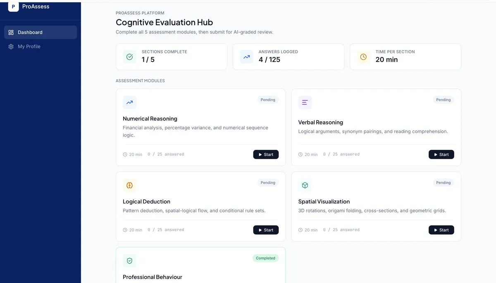

01 · AI SaaS
ProAssess
AI hiring assessment platform
Recruiters invite candidates by email, candidates take four timed reasoning tests, and Gemini writes a score summary the moment they submit. I built the candidate pipeline, a side-by-side comparison view for shortlisting, and GDPR-compliant erasure of candidate data.
- react 19
- typescript
- firebase
- gemini